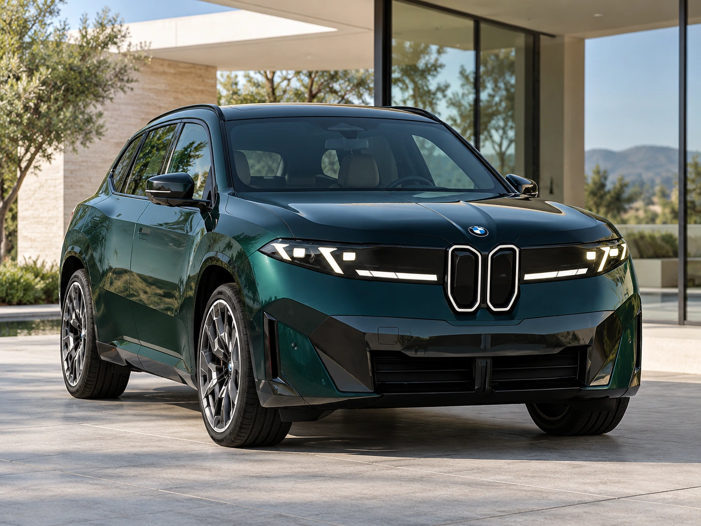
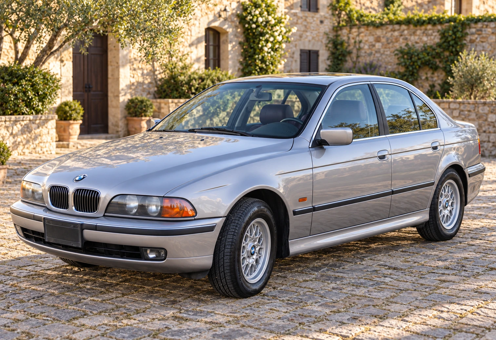
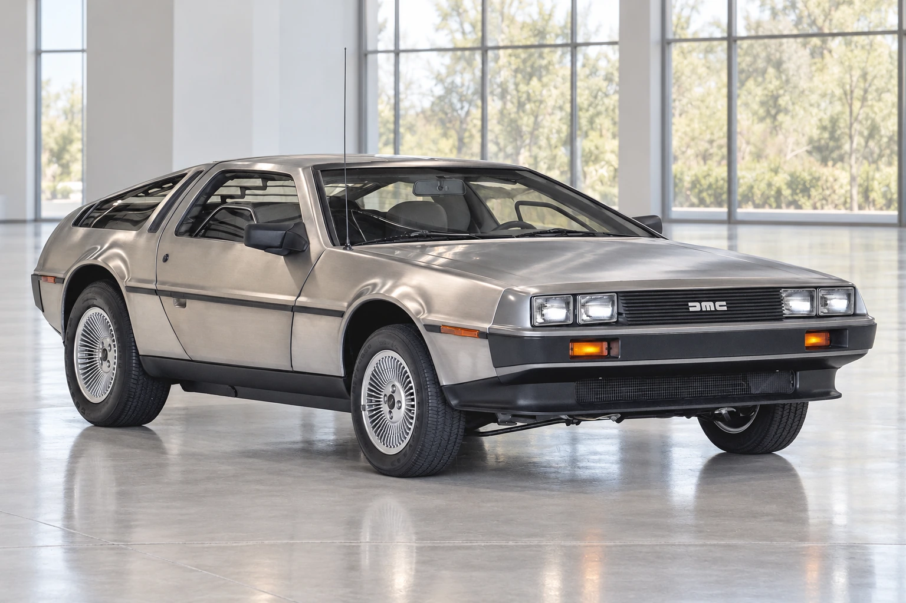
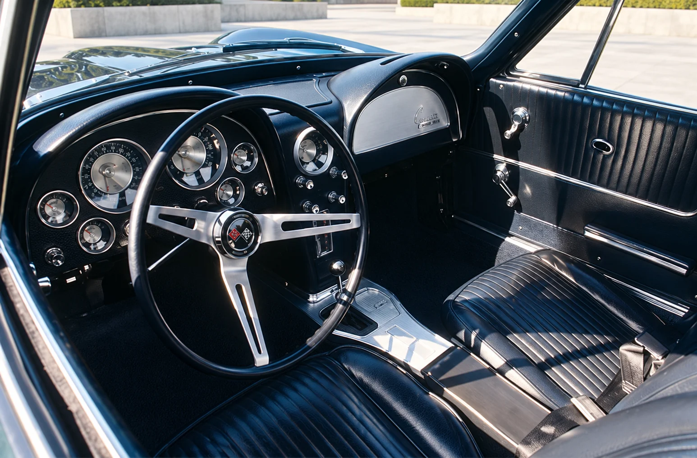
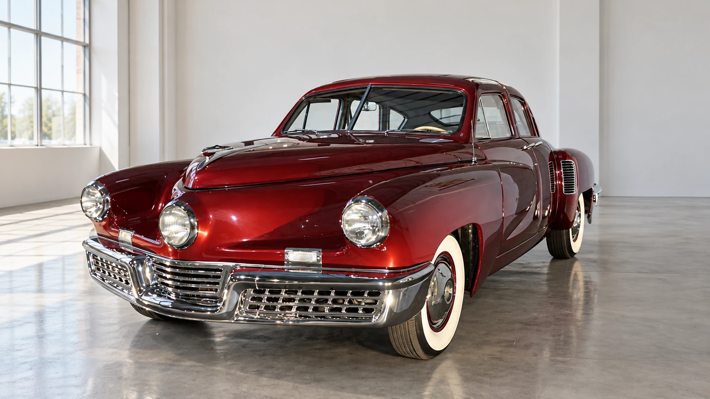

News
2027 Mercedes-Benz GLS: A Familiar SUV Gets a Digital Overhaul
A 530-hp V8 draws attention, but the standard Superscreen and new software architecture reach further across the GLS lineup.
Explore AutoGlob
Browse every AutoGlob article by section, brand or topic.
18 articles
News
A 530-hp V8 draws attention, but the standard Superscreen and new software architecture reach further across the GLS lineup.

News
A rear differential and adaptive chassis matter as much as the headline output. Here is what BMW has confirmed for the U.S., and what remains unknown.

Analysis
Volvo’s official P10 figures tell a different story from the future P12’s headline. The wheel specification, charging conditions and delivery timing matter.

Analysis
Chevrolet pairs a naturally aspirated V8 with a front electric motor. Its officially declared figures explain the ambition; the equipment defines the buying question.

Guides
Fuel savings are only one line in the budget. Use mileage, charging access, borrowing costs and resale assumptions to build a comparison you can actually check.

Stories
The six-cylinder E39 offers a useful way to understand the 5 Series: through proportion, chassis engineering and the demands of keeping an older car on the road.

Analysis
Fuel economy favors the hybrid. The buying decision still turns on trim, mileage and the price you actually pay.

News
Mercedes has announced a powerful electric sedan with rapid-charging ambitions. A U.S. price and EPA range are still essential to the buying picture.

Analysis
An early G20 and today’s 330i share a lineage. Their cabin, equipment and buying questions can be very different.

Analysis
A naturally aspirated V16 and electric assistance change Bugatti’s performance formula. The last Chiron marks one chapter of that transition.

Analysis
Ferrari 12Cilindri, Lamborghini Revuelto and Gordon Murray T.50 show why engine aspiration and hybridization are different questions.

Guides
Use dated market evidence, battery checks, the original warranty and your charging routine to assess a used electric car.

Stories
The finish attracts attention. Chassis identity, coachwork and a documented history establish what has actually been preserved.

Stories
Long before pop culture, there was a factory in Belfast and a very risky bet.

Stories
The Audi Sport quattro S1 makes the engineering ambition visible. The championship’s break after 1986 shows why the surrounding rules and setting mattered.

Stories
The 1963 Corvette’s sculpted cockpit explains the appeal of the era—and why materials, usability and safety need their own questions.

Stories
A closer look at the Tucker 48, its safety ideas and the business history behind a much-retold collapse.

Guides
The winning bid is only the start. A useful valuation connects the specific car, the sale terms and the cost of bringing it home.
No articles match these filters. Try another section or topic.